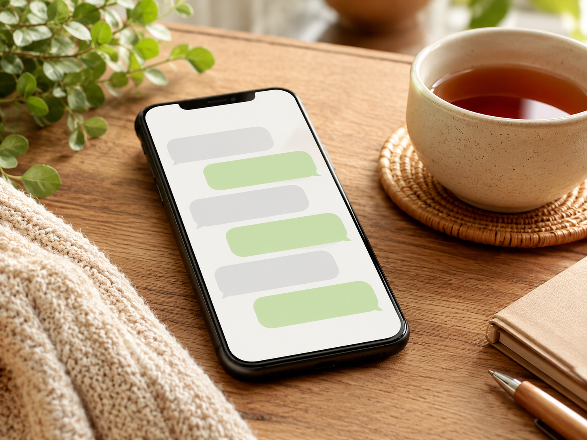

Build a study plan, track your progress, and stay on the right path — with personalized Japanese learning consulting designed for you.
See PlansThe problem isn't the method you chose — it's not knowing what that method is actually building in you.
From building your study plan and tracking your progress, to recommending resources and adjusting your direction along the way — everything is managed through your own personalized Notion dashboard, so your learning stays visible and on track.
Instead of spending more time and money on lessons, the goal is to get you to a place where you can learn effectively on your own. That's what this service is for.
A closer look at what's behind each plan.
I look at what you've actually been studying — your logs, your questions, where you got stuck — and write back with what's working, what's holding you back, and exactly what to focus on next.
It's not a generic template. Every session is a direct response to your situation, written into your Notion dashboard so you can act on it right away.
A custom study roadmap and progress tracker, built around your current level and goals. It's where your plan, my feedback, and your progress all live in one place.
Instead of scattered notes and half-finished apps, you get one clear view of where you are and what comes next — so your learning stays visible and easy to keep going.

Stuck on a method, a resource, or a grammar point? Send your question on Discord and get a clear written answer — no waiting for a scheduled call.
Because everything is in text, you can re-read it anytime and run it through a translation tool if English isn't your strong point. You never have to stay stuck for long.
Choose the plan that fits your pace and complete your subscription.
Share your current level, goals, and study habits.
A custom study roadmap and progress tracker, built just for you.
Regular check-ins, plan adjustments, and Q&A — all in one place.
One monthly check-in to get your learning on track
Bi-weekly support to keep moving forward
Weekly guidance with deeper, more personalized support
Yes. Whether you're a complete beginner or an intermediate learner, the plan will be tailored to your current level and goals.
No problem. All feedback is delivered as text, so you can use a translation tool to read it in your language.
Yes. You can cancel your Ko-fi subscription at any time.
Absolutely. You'll receive an invite link, and a free Notion account is all you need to get started.
Feedback is written directly into your personal Notion dashboard. You'll get a notification on Discord whenever it's updated.
Yes. Discord is used for Q&A and to notify you when your feedback is ready. Creating an account is free.
The reason you can't keep going isn't motivation — it's the lack of a system.
Let's build that system together.